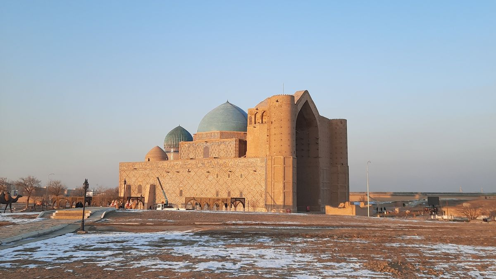
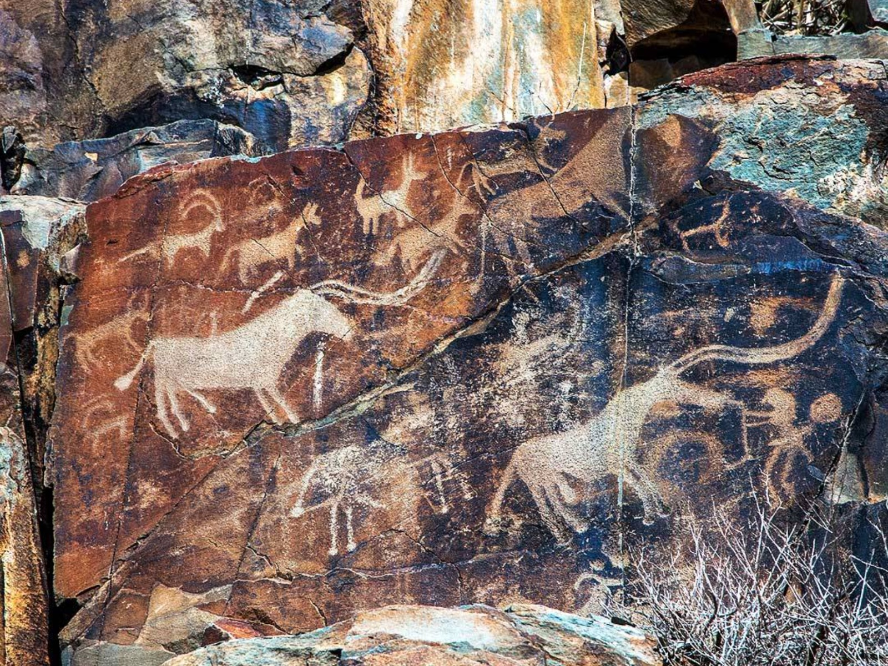
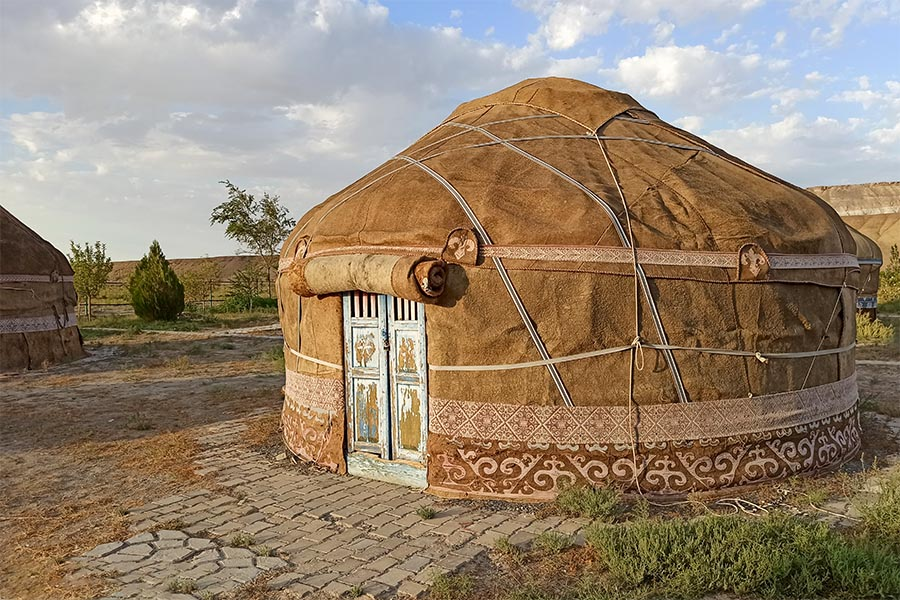

Mausoleum of Khoja Ahmed Yasawi
Located in Turkistan, this mausoleum is an important monument of medieval architecture and cultural heritage.
Explore site →Heritage Collection
Explore historical sites, traditional architecture, and cultural practices that represent different parts of Kazakhstan's heritage.


Located in Turkistan, this mausoleum is an important monument of medieval architecture and cultural heritage.
Explore site →
The Tamgaly archaeological landscape contains ancient rock carvings that provide evidence of early cultural traditions.
Explore site →
The yurt is a traditional portable dwelling associated with the nomadic lifestyle and craftsmanship of the Kazakh people.
Explore traditions →| Heritage Site | Region | Type | Historical Period |
|---|---|---|---|
| Mausoleum of Khoja Ahmed Yasawi | Turkistan | Architecture | 14th–15th century |
| Tamgaly Petroglyphs | Almaty Region | Archaeological Site | Bronze Age and later |
| Otrar | Turkistan Region | Ancient Settlement | Medieval period |
| Sauran | Turkistan Region | Fortified City | Medieval period |
Historic mausoleums, settlements, and traditional yurts show the variety of Kazakh architecture.
Ornaments, petroglyphs, and traditional objects preserve important cultural meanings and stories.
 Aisamal
Aisamal
 Nurdaulet
Nurdaulet